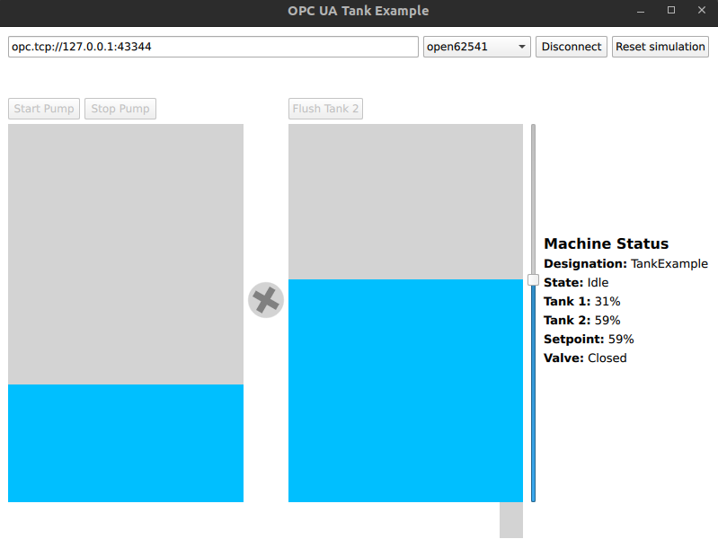

Qt Quick Water Pump
Interacting with an OPC UA server to build a QML-based HMI for a simple water pump machine.
Qt Quick Water Pump example shows how to use Qt OPC UA QML API to interact with an OPC UA server to build a QML based HMI for a simple machine.

Building the Server
Before you can use the Water Pump examples, you need to build the simulation server. The simulation server project resides next to the Water Pump examples. You can open and build it in QtCreator or from the terminal as usual.
The Simulation
The OPC UA server included in this example runs a simulation of a machine containing two tanks, a water pump and a valve. Water can be pumped from the first tank into the second tank and then be flushed from the second tank by opening the valve. Both operations have a user-configurable setpoint which controls how much water is pumped to or flushed from the second tank.
The following nodes exist on the server:
| NodeId | Function |
|---|---|
| ns=2;s=Machine | The folder containing the method and variable nodes for the machine |
| ns=2;s=Machine.State | The state of the machine |
| ns=2;s=Machine.Tank1.PercentFilled | The current fill status of the first tank |
| ns=2;s=Machine.Tank2.PercentFilled | The current fill status of the second tank |
| ns=2;s=Machine.Tank2.TargetPercent | The setpoint for pumping and flushing |
| ns=2;s=Machine.Tank2.ValveState | The state of the valve of the second tank |
| ns=2;s=Machine.Designation | A human readable designation of the machine for display purposes |
| ns=2;s=Machine.Start | Call this method to start the pump |
| ns=2;s=Machine.Stop | Call this method to stop the pump |
| ns=2;s=Machine.FlushTank2 | Call this method to flush tank 2 |
| ns=2;s=Machine.Reset | Call this method to reset the simulation |
Implementation
This example uses QML items to read and write values as well as method calls. All operations are asynchronous and handled by QML in the background.
A QML item represents the machine and its components. This item does not have any graphical interface and only provides access to the properties of the machine. It has two tanks which are instances of a separate Tank component.
Properties
The machine item exposes all properties and subitems as properties.
...
readonly property alias tank1: tank1
readonly property alias tank2: tank2
readonly property alias state: machineState.value
readonly property alias tank2PercentFilled: tank2.percentFilled
readonly property alias tank2valveState: tank2.valveState
readonly property alias designation: designation.value
property alias resetMethod: resetMethod
property alias startMethod: startMethod
property alias stopMethod: stopMethod
property alias flushMethod: flushMethod
...
Asynchronous Handlers
The asynchronous parts of the API are handled by QML automatically because signals are emitted for every property change by default.
For example, the button to flush the second tank is enabled only if the backend is connected to the server, the machine is idle, and the tank level is above the setpoint. On click, the flushTank2() method is called on the server.
Tank2Unit {
flushButtonEnabled: connection.connected && machine.state === Machine.MachineState.Idle
&& machine.tank2.percentFilled > machine.tank2.targetPercent
percentFilled: machine.tank2.percentFilled
valveState: machine.tank2valveState
Usage
The server is started automatically by the HMI application. After connecting to the server by clicking the Connect button, drag the slider to set a setpoint, then click Start to start pumping water from the first tank to the second tank. After setting a setpoint lower than the current value of the second tank, a click on Flush opens the valve.
If there is no water left, click Reset simulation to refill the first tank.
Files:
See also Waterpump Example.